import random
from pathlib import Path
import zipfile
import ast, dis, io, tokenize
from urllib.request import urlretrieve
import numpy as np
import numpy.random as rnd
import pandas as pd
import spacy
from sklearn.feature_extraction.text import CountVectorizer, TfidfVectorizer
from sklearn.model_selection import train_test_split
from sklearn.preprocessing import LabelEncoder
import keras
from keras.callbacks import EarlyStopping
from keras.layers import Dense, Input
from keras.metrics import SparseTopKCategoricalAccuracy
from keras.models import SequentialNatural Language Processing
ACTL3143 & ACTL5111 Deep Learning for Actuaries
Patrick Laub
Natural Language Processing
Lecture Outline
Natural Language Processing
How Computers View Text
Car Crash Police Reports
Text Vectorisation with Bag of Words
Discard Infrequent Words and Stop Words
Merge Together Similar Words
Use a Continuous Representation
Word Embeddings
Demo of Word Embeddings
Recap
What is NLP?
A field of research at the intersection of computer science, linguistics, and artificial intelligence that takes the naturally spoken or written language of humans and processes it with machines to automate or help in certain tasks.
Applications of NLP in Industry
1) Classifying documents: Using the language within a body of text to classify it into a particular category, e.g.:
- Grouping emails into high and low urgency
- Movie reviews into positive and negative sentiment (i.e. sentiment analysis)
- Company news into bullish (positive) and bearish (negative) statements
2) Machine translation: Assisting language translators with machine-generated suggestions from a source language (e.g. English) to a target language
3) Search engine functions, including:
- Autocomplete
- Predicting what information or website user is seeking
4) Speech recognition: Interpreting voice commands to provide information or take action. Used in virtual assistants such as Alexa, Siri, and Cortana
Deep learning & NLP?
Simple NLP applications such as spell checkers and synonym suggesters do not require deep learning and can be solved with deterministic, rules-based code with a dictionary/thesaurus.
More complex NLP applications such as classifying documents, search engine word prediction, and chatbots are complex enough to be solved using deep learning methods.
NLP in 1966-1973
“A typical story occurred in early machine translation efforts, which were generously funded by the U.S. National Research Council in an attempt to speed up the translation of Russian scientific papers in the wake of the Sputnik launch in 1957. It was thought initially that simple syntactic transformations, based on the grammars of Russian and English, and word replacement from an electronic dictionary, would suffice to preserve the exact meanings of sentences. The fact is that accurate translation requires background knowledge in order to resolve ambiguity and establish the content of the sentence. The famous retranslation of “the spirit is willing but the flesh is weak” as “the vodka is good but the meat is rotten” illustrates the difficulties encountered. In 1966, a report by an advisory committee found that “there has been no machine translation of general scientific text, and none is in immediate prospect.” All U.S. government funding for academic translation projects was canceled.”
— Russell & Norvig (2021, p. 21)
High-level history of deep learning
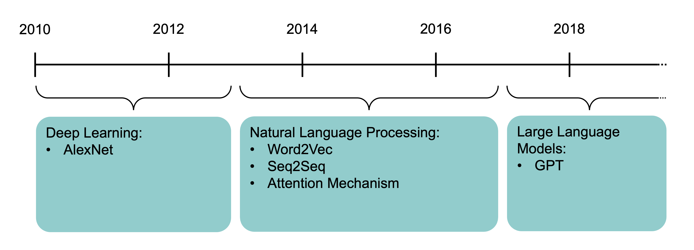
A brief history of deep learning.
The attention mechanism (Bahdanau et al., 2015) and the Transformer architecture (Vaswani et al., 2017) underpin modern large language models.
Source: Melissa Renard (2025)
How Computers View Text
Lecture Outline
Natural Language Processing
How Computers View Text
Car Crash Police Reports
Text Vectorisation with Bag of Words
Discard Infrequent Words and Stop Words
Merge Together Similar Words
Use a Continuous Representation
Word Embeddings
Demo of Word Embeddings
Recap
Python imports
Also need to run python -m spacy download en_core_web_trf.
How the computer sees text
Spot the odd one out:
[112, 97, 116, 114, 105, 99, 107, 32, 108, 97, 117, 98][80, 65, 84, 82, 73, 67, 75, 32, 76, 65, 85, 66][76, 101, 118, 105, 32, 65, 99, 107, 101, 114, 109, 97, 110]American Standard Code for Information Interchange
| Dec | Char | Esc |
|---|---|---|
| 0 | [Null] | \0 |
| 1 | [Start of Heading] | |
| 2 | [Start of Text] | |
| 3 | [End of Text] | |
| 4 | [End of Transmission] | |
| 5 | [Enquiry] | |
| 6 | [Acknowledge] | |
| 7 | [Bell] | \a |
| 8 | [Backspace] | \b |
| 9 | [Horizontal Tab] | \t |
| 10 | [Line Feed] | \n |
| 11 | [Vertical Tab] | \v |
| 12 | [Form Feed] | \f |
| 13 | [Carriage Return] | \r |
| 14 | [Shift Out] | |
| 15 | [Shift In] | |
| 16 | [Data Link Escape] | |
| 17 | [Device Control 1] | |
| 18 | [Device Control 2] | |
| 19 | [Device Control 3] | |
| 20 | [Device Control 4] | |
| 21 | [Negative Acknowledge] | |
| 22 | [Synchronous Idle] | |
| 23 | [End of Trans. Block] | |
| 24 | [Cancel] | |
| 25 | [End of Medium] | |
| 26 | [Substitute] | |
| 27 | [Escape] | |
| 28 | [File Separator] | |
| 29 | [Group Separator] | |
| 30 | [Record Separator] | |
| 31 | [Unit Separator] |
| Dec | Char |
|---|---|
| 32 | [Space] |
| 33 | ! |
| 34 | ” |
| 35 | # |
| 36 | $ |
| 37 | % |
| 38 | & |
| 39 | ’ |
| 40 | ( |
| 41 | ) |
| 42 | * |
| 43 | + |
| 44 | , |
| 45 | - |
| 46 | . |
| 47 | / |
| 48 | 0 |
| 49 | 1 |
| 50 | 2 |
| 51 | 3 |
| 52 | 4 |
| 53 | 5 |
| 54 | 6 |
| 55 | 7 |
| 56 | 8 |
| 57 | 9 |
| 58 | : |
| 59 | ; |
| 60 | < |
| 61 | = |
| 62 | > |
| 63 | ? |
| Dec | Char |
|---|---|
| 64 | @ |
| 65 | A |
| 66 | B |
| 67 | C |
| 68 | D |
| 69 | E |
| 70 | F |
| 71 | G |
| 72 | H |
| 73 | I |
| 74 | J |
| 75 | K |
| 76 | L |
| 77 | M |
| 78 | N |
| 79 | O |
| 80 | P |
| 81 | Q |
| 82 | R |
| 83 | S |
| 84 | T |
| 85 | U |
| 86 | V |
| 87 | W |
| 88 | X |
| 89 | Y |
| 90 | Z |
| 91 | [ |
| 92 | \ |
| 93 | ] |
| 94 | ^ |
| 95 | _ |
| Dec | Char |
|---|---|
| 96 | ` |
| 97 | a |
| 98 | b |
| 99 | c |
| 100 | d |
| 101 | e |
| 102 | f |
| 103 | g |
| 104 | h |
| 105 | i |
| 106 | j |
| 107 | k |
| 108 | l |
| 109 | m |
| 110 | n |
| 111 | o |
| 112 | p |
| 113 | q |
| 114 | r |
| 115 | s |
| 116 | t |
| 117 | u |
| 118 | v |
| 119 | w |
| 120 | x |
| 121 | y |
| 122 | z |
| 123 | { |
| 124 | | |
| 125 | } |
| 126 | ~ |
| 127 | [Del] |
“I knew she’d have an ASCII table in there somewhere. All computer geeks do.” (The Martian)
Random strings
The built-in chr function turns numbers into characters.
['E', ',', 'h', ')', 'k', '%', 'o', '`', '0', '!']"lg&9R42t+<=.Rdww~v-)'_]6Y! \\q(x-Oh>g#f5QY#d8Kl:TpI"Escape characters
Non-natural language processing I
How would you evaluate
10 + 2 * -3
All that Python sees is a string of characters.
Non-natural language processing II
Python first tokenizes the string:
TokenInfo(type=68 (ENCODING), string='utf-8', start=(0, 0), end=(0, 0), line='')
TokenInfo(type=2 (NUMBER), string='10', start=(1, 0), end=(1, 2), line='10 + 2 * -3')
TokenInfo(type=55 (OP), string='+', start=(1, 3), end=(1, 4), line='10 + 2 * -3')
TokenInfo(type=2 (NUMBER), string='2', start=(1, 5), end=(1, 6), line='10 + 2 * -3')
TokenInfo(type=55 (OP), string='*', start=(1, 7), end=(1, 8), line='10 + 2 * -3')
TokenInfo(type=55 (OP), string='-', start=(1, 9), end=(1, 10), line='10 + 2 * -3')
TokenInfo(type=2 (NUMBER), string='3', start=(1, 10), end=(1, 11), line='10 + 2 * -3')
TokenInfo(type=4 (NEWLINE), string='', start=(1, 11), end=(1, 12), line='10 + 2 * -3')
TokenInfo(type=0 (ENDMARKER), string='', start=(2, 0), end=(2, 0), line='')Non-natural language processing III
Python needs to parse the tokens into an abstract syntax tree.
graph TD;
Expr --> C[Add]
C --> D[10]
C --> E[Mult]
E --> F[2]
E --> G[USub]
G --> H[3]
Non-natural language processing IV
The abstract syntax tree is then compiled into bytecode.
ChatGPT tokenization
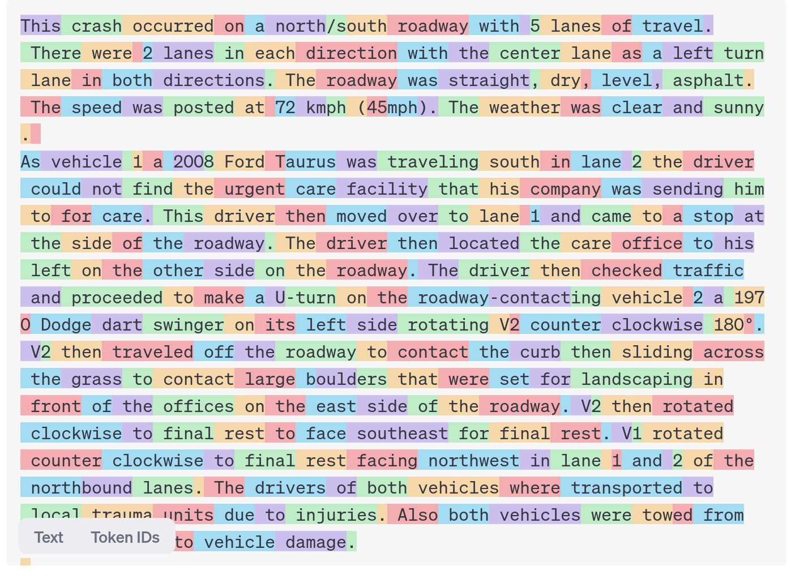
E.g. 犭 radical for animals
狗 gǒu (dog)
猫 māo (cat)
狼 láng (wolf)
狮 shī (lion)
Car Crash Police Reports
Lecture Outline
Natural Language Processing
How Computers View Text
Car Crash Police Reports
Text Vectorisation with Bag of Words
Discard Infrequent Words and Stop Words
Merge Together Similar Words
Use a Continuous Representation
Word Embeddings
Demo of Word Embeddings
Recap
Downloading the dataset
Look at the (U.S.) National Highway Traffic Safety Administration’s (NHTSA) National Motor Vehicle Crash Causation Survey (NMVCCS) dataset.
if not Path("data/NHTSA_NMVCCS_extract.parquet.gzip").exists():
print("Downloading dataset")
!wget -P data https://github.com/JSchelldorfer/ActuarialDataScience/raw/master/12%20-%20NLP%20Using%20Transformers/NHTSA_NMVCCS_extract.parquet.gzip
df = pd.read_parquet("data/NHTSA_NMVCCS_extract.parquet.gzip")
print(f"shape of DataFrame: {df.shape}")shape of DataFrame: (6949, 16)Features
level_0,index,SCASEID: all useless row numbersSUMMARY_ENandSUMMARY_GE: summaries of the accidentNUMTOTV: total number of vehicles involved in the accidentWEATHER1toWEATHER8(not one-hot):WEATHER1: cloudyWEATHER2: snowWEATHER3: fog, smog, smokeWEATHER4: rainWEATHER5: sleet, hail (freezing drizzle or rain)WEATHER6: blowing snowWEATHER7: severe crosswindsWEATHER8: other
INJSEVAandINJSEVB: injury severity & (binary) presence of bodily injury
Source: JSchelldorfer’s GitHub.
Crash summaries
0 V1, a 2000 Pontiac Montana minivan, made a lef...
1 The crash occurred in the eastbound lane of a ...
2 This crash occurred just after the noon time h...
...
6946 The crash occurred in the eastbound lanes of a...
6947 This single-vehicle crash occurred in a rural ...
6948 This two vehicle daytime collision occurred mi...
Name: SUMMARY_EN, Length: 6949, dtype: strThe length of the summaries

A crash summary
"The crash occurred in the eastbound lane of a two-lane, two-way asphalt roadway on level grade. The conditions were daylight and wet with cloudy skies in the early afternoon on a weekday.\t\r \r V1, a 1995 Chevrolet Lumina was traveling eastbound. V2, a 2004 Chevrolet Trailblazer was also traveling eastbound on the same roadway. V2, was attempting to make a left-hand turn into a private drive on the North side of the roadway. While turning V1 attempted to pass V2 on the left-hand side contacting it's front to the left side of V2. Both vehicles came to final rest on the roadway at impact.\r \r The driver of V1 fled the scene and was not identified, so no further information could be obtained from him. The Driver of V2 stated that the driver was a male and had hit his head and was bleeding. She did not pursue the driver because she thought she saw a gun. The officer said that the car had been reported stolen.\r \r The Critical Precrash Event for the driver of V1 was this vehicle traveling over left lane line on the left side of travel. The Critical Reason for the Critical Event was coded as unknown reason for the critical event because the driver was not available. \r \r The driver of V2 was a 41-year old female who had reported that she had stopped prior to turning to make sure she was at the right house. She was going to show a house for a client. She had no health related problems. She had taken amoxicillin. She does not wear corrective lenses and felt rested. She was not injured in the crash.\r \r The Critical Precrash Event for the driver of V2 was other vehicle encroachment from adjacent lane over left lane line. The Critical Reason for the Critical Event was not coded for this vehicle and the driver of V2 was not thought to have contributed to the crash."Carriage returns
The Critical Precrash Event for the driver of V2 was other vehicle encroachment from adjacent lane over left lane line. The Critical Reason for the Critical Event was not coded for this vehicle and the driver of V2 was not thought to have contributed to the crash.r corrective lenses and felt rested. She was not injured in the crash. of V2. Both vehicles came to final rest on the roadway at impact.The crash occurred in the eastbound lane of a two-lane, two-way asphalt roadway on level grade. The conditions were daylight and wet with cloudy skies in the early afternoon on a weekday.
V1, a 1995 Chevrolet Lumina was traveling eastbound. V2, a 2004 Chevrolet Trailblazer was also traveling eastbound on the same roadway. V2, was attempting to make a left-hand turn into a private drive on the North side of the roadway. While turning V1 attempted to pass V2 on the left-hand side contactinTarget
Predict number of vehicles in the crash.
NUMTOTV
1 1822
2 4151
3 783
4 150
5 34
6 5
7 2
8 1
9 1
Name: count, dtype: int64Give fake names to the vehicles
Find the words “V1”, “V2” and “V3” and replace them with random labels.
rnd.seed(123)
for i, summary in enumerate(df["SUMMARY_EN"]):
word_numbers = ["one", "two", "three", "four", "five", "six", "seven", "eight", "nine", "ten"]
num_cars = 10
new_car_nums = [f"V{rnd.randint(100, 10000)}" for _ in range(num_cars)]
num_spaces = 4
for car in range(1, num_cars+1):
new_num = new_car_nums[car-1]
summary = summary.replace(f"V-{car}", new_num)
summary = summary.replace(f"Vehicle {word_numbers[car-1]}", new_num).replace(f"vehicle {word_numbers[car-1]}", new_num)
summary = summary.replace(f"Vehicle #{word_numbers[car-1]}", new_num).replace(f"vehicle #{word_numbers[car-1]}", new_num)
summary = summary.replace(f"Vehicle {car}", new_num).replace(f"vehicle {car}", new_num)
summary = summary.replace(f"Vehicle #{car}", new_num).replace(f"vehicle #{car}", new_num)
summary = summary.replace(f"Vehicle # {car}", new_num).replace(f"vehicle # {car}", new_num)
for j in range(num_spaces+1):
summary = summary.replace(f"V{' '*j}{car}", new_num).replace(f"V{' '*j}#{car}", new_num).replace(f"V{' '*j}# {car}", new_num)
summary = summary.replace(f"v{' '*j}{car}", new_num).replace(f"v{' '*j}#{car}", new_num).replace(f"v{' '*j}# {car}", new_num)
df.loc[i, "SUMMARY_EN"] = summaryConvert y to integers & split the data
array([1, 1, 1, ..., 2, 0, 1], shape=(6949,))weather_cols = [f"WEATHER{i}" for i in range(1, 9)]
features = df[["SUMMARY_EN"] + weather_cols]
X_main, X_test, y_main, y_test = \
train_test_split(features, target, test_size=0.2, random_state=1)
# As 0.25 x 0.8 = 0.2
X_train, X_val, y_train, y_val = \
train_test_split(X_main, y_main, test_size=0.25, random_state=1)
X_train.shape, X_val.shape, X_test.shape((4169, 9), (1390, 9), (1390, 9))Text Vectorisation with Bag of Words
Lecture Outline
Natural Language Processing
How Computers View Text
Car Crash Police Reports
Text Vectorisation with Bag of Words
Discard Infrequent Words and Stop Words
Merge Together Similar Words
Use a Continuous Representation
Word Embeddings
Demo of Word Embeddings
Recap
Text vectorisation
Text vectorisation describes the process of converting text into a numerical representation.
Popular methods for vectorisation include:
- Bag of words
- TF-IDF
- Word vectors
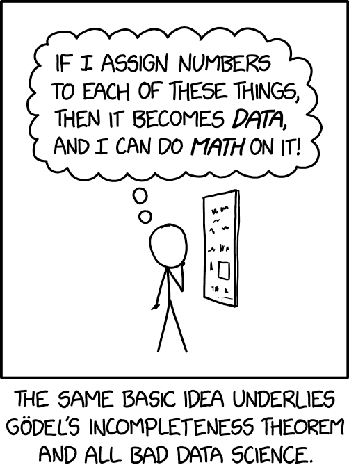
Source: Randall Munroe (2022), xkcd #2610: Assigning Numbers.
Grab the start of a few summaries
2532 This crash occurred in the early afternoon of ...
6209 This two-vehicle crash occurred in a four-legg...
2561 The crash occurred in the eastbound direction ...
Name: SUMMARY_EN, dtype: str2532 [This, crash, occurred, in, the, early, aftern...
6209 [This, two-vehicle, crash, occurred, in, a, fo...
2561 [The, crash, occurred, in, the, eastbound, dir...
Name: SUMMARY_EN, dtype: objectCount words in the first summaries
13 ['afternoon' 'crash' 'direction' 'early' 'eastbound' 'four' 'in' 'legged'
'occurred' 'the' 'this' 'two' 'vehicle']<Compressed Sparse Row sparse matrix of dtype 'int64'
with 21 stored elements and shape (3, 13)>Encode new sentences to BoW
<Compressed Sparse Row sparse matrix of dtype 'int64'
with 2 stored elements and shape (2, 13)>array([[0, 1, 0, 0, 0, 0, 1, 0, 0, 0, 0, 0, 0],
[0, 0, 0, 0, 0, 0, 0, 0, 0, 0, 0, 0, 0]])Bag of n-grams
27 ['afternoon' 'crash' 'crash occurred' 'direction' 'early'
'early afternoon' 'eastbound' 'eastbound direction' 'four' 'four legged'
'in' 'in four' 'in the' 'legged' 'occurred' 'occurred in' 'the'
'the crash' 'the early' 'the eastbound' 'this' 'this crash' 'this two'
'two' 'two vehicle' 'vehicle' 'vehicle crash']array([[1, 1, 1, 0, 1, 1, 0, 0, 0, 0, 1, 0, 1, 0, 1, 1, 1, 0, 1, 0, 1, 1,
0, 0, 0, 0, 0],
[0, 1, 1, 0, 0, 0, 0, 0, 1, 1, 1, 1, 0, 1, 1, 1, 0, 0, 0, 0, 1, 0,
1, 1, 1, 1, 1],
[0, 1, 1, 1, 0, 0, 1, 1, 0, 0, 1, 0, 1, 0, 1, 1, 2, 1, 0, 1, 0, 0,
0, 0, 0, 0, 0]])Count words in all the summaries
18866Create the X matrices
def vectorise_dataset(X, vect, txt_col="SUMMARY_EN", dataframe=False):
X_vects = vect.transform(X[txt_col]).toarray()
X_other = X[[f"WEATHER{i}" for i in range(1, 9)]]
if not dataframe:
return np.concatenate([X_vects, X_other], axis=1)
else:
# Add column names and indices to the combined dataframe.
vocab = list(vect.get_feature_names_out())
X_vects_df = pd.DataFrame(X_vects, columns=vocab, index=X.index)
return pd.concat([X_vects_df, X_other], axis=1)Check the input matrix
| 00 | 000 | 000lbs | 003 | 005 | 007 | 00am | 00pm | 00tydo2 | 01 | ... | zx5 | zyrtec | WEATHER1 | WEATHER2 | WEATHER3 | WEATHER4 | WEATHER5 | WEATHER6 | WEATHER7 | WEATHER8 | |
|---|---|---|---|---|---|---|---|---|---|---|---|---|---|---|---|---|---|---|---|---|---|
| 2532 | 0 | 0 | 0 | 0 | 0 | 0 | 0 | 0 | 0 | 0 | ... | 0 | 0 | 0 | 0 | 0 | 0 | 0 | 0 | 0 | 0 |
| 6209 | 0 | 0 | 0 | 0 | 0 | 0 | 0 | 0 | 0 | 0 | ... | 0 | 0 | 0 | 0 | 0 | 0 | 0 | 0 | 0 | 0 |
| 2561 | 0 | 0 | 0 | 0 | 0 | 0 | 0 | 0 | 0 | 0 | ... | 0 | 0 | 0 | 0 | 0 | 0 | 0 | 0 | 0 | 0 |
| ... | ... | ... | ... | ... | ... | ... | ... | ... | ... | ... | ... | ... | ... | ... | ... | ... | ... | ... | ... | ... | ... |
| 6882 | 0 | 0 | 0 | 0 | 0 | 0 | 0 | 0 | 0 | 0 | ... | 0 | 0 | 0 | 0 | 0 | 0 | 0 | 0 | 0 | 0 |
| 206 | 0 | 0 | 0 | 0 | 0 | 0 | 0 | 0 | 0 | 0 | ... | 0 | 0 | 0 | 0 | 0 | 0 | 0 | 0 | 0 | 0 |
| 6356 | 0 | 0 | 0 | 0 | 0 | 0 | 0 | 0 | 0 | 0 | ... | 0 | 0 | 0 | 0 | 0 | 0 | 0 | 0 | 0 | 0 |
4169 rows × 18874 columns
Make a simple dense model
num_features = X_train_bow.shape[1]
num_cats = 3 # 1, 2, 3+ vehicles
def build_model(num_features, num_cats):
random.seed(42)
model = Sequential([
Input((num_features,)),
Dense(100, activation="relu"),
Dense(num_cats, activation="softmax")
])
topk = SparseTopKCategoricalAccuracy(k=2, name="topk")
model.compile("adam", "sparse_categorical_crossentropy",
metrics=["accuracy", topk])
return modelInspect the model
Model: "sequential"
┏━━━━━━━━━━━━━━━━━━━━━━━━━━━━━━━━━┳━━━━━━━━━━━━━━━━━━━━━━━━┳━━━━━━━━━━━━━━━┓ ┃ Layer (type) ┃ Output Shape ┃ Param # ┃ ┡━━━━━━━━━━━━━━━━━━━━━━━━━━━━━━━━━╇━━━━━━━━━━━━━━━━━━━━━━━━╇━━━━━━━━━━━━━━━┩ │ dense (Dense) │ (None, 100) │ 1,887,500 │ ├─────────────────────────────────┼────────────────────────┼───────────────┤ │ dense_1 (Dense) │ (None, 3) │ 303 │ └─────────────────────────────────┴────────────────────────┴───────────────┘
Total params: 1,887,803 (7.20 MB)
Trainable params: 1,887,803 (7.20 MB)
Non-trainable params: 0 (0.00 B)
Fit & evaluate the model
Epoch 2: early stopping
Restoring model weights from the end of the best epoch: 1.
CPU times: user 1.36 s, sys: 197 ms, total: 1.56 s
Wall time: 725 ms[0.05817717686295509, 0.9901655316352844, 0.9995202422142029]Discard Infrequent Words and Stop Words
Lecture Outline
Natural Language Processing
How Computers View Text
Car Crash Police Reports
Text Vectorisation with Bag of Words
Discard Infrequent Words and Stop Words
Merge Together Similar Words
Use a Continuous Representation
Word Embeddings
Demo of Word Embeddings
Recap
The max_features value
10What is left?
? ? ? in the ? ? of ? ?
? ? ? ? in ? ? ? ? ?
? ? ? in the ? ? of ? ? in the of in the of of was and was
in and of in and for the of the and
in the of to was was of was was and Remove stop words
10['coded' 'crash' 'critical' 'driver' 'event' 'intersection' 'lane' 'left'
'roadway' 'vehicle']crash intersection roadway roadway roadway intersection lane lane intersection driver
crash roadway left roadway roadway roadway lane lane roadway crash
crash vehicle left left vehicle driver vehicle lane lane coded Keep 1,000 most frequent words
1000['10' '105' '113' '12' '15'] ['interruption' 'intersected' 'intersecting' 'intersection' 'interstate'] ['year' 'years' 'yellow' 'yield' 'zone']Create the X matrices:
What is left?
crash occurred early afternoon weekday middle suburban intersection consisted lanes
crash occurred roadway level consists lanes direction center left turn
crash occurred eastbound direction entrance ramp right curved road uphill
crash occurred straight roadway consists lanes direction center left turn
collision occurred evening hours crash occurred level bituminous roadway residential
vehicle crash occurred daylight location lane undivided left curved downhill
vehicle crash occurred early morning daylight hours roadway traffic roadway
crash occurred northbound lanes northbound southbound slightly street curved posted Note
We hope to see SMS-like language, with limited vocabulary but still able to understand it.
Check the input matrix
| 10 | 105 | 113 | 12 | 15 | 150 | 16 | 17 | 18 | 180 | ... | yield | zone | WEATHER1 | WEATHER2 | WEATHER3 | WEATHER4 | WEATHER5 | WEATHER6 | WEATHER7 | WEATHER8 | |
|---|---|---|---|---|---|---|---|---|---|---|---|---|---|---|---|---|---|---|---|---|---|
| 2532 | 0 | 0 | 0 | 0 | 0 | 0 | 0 | 0 | 0 | 0 | ... | 0 | 0 | 0 | 0 | 0 | 0 | 0 | 0 | 0 | 0 |
| 6209 | 0 | 0 | 0 | 0 | 0 | 0 | 0 | 0 | 0 | 0 | ... | 0 | 0 | 0 | 0 | 0 | 0 | 0 | 0 | 0 | 0 |
| 2561 | 1 | 0 | 1 | 0 | 0 | 0 | 0 | 0 | 0 | 0 | ... | 0 | 0 | 0 | 0 | 0 | 0 | 0 | 0 | 0 | 0 |
| ... | ... | ... | ... | ... | ... | ... | ... | ... | ... | ... | ... | ... | ... | ... | ... | ... | ... | ... | ... | ... | ... |
| 6882 | 0 | 0 | 0 | 0 | 0 | 0 | 0 | 0 | 0 | 0 | ... | 0 | 0 | 0 | 0 | 0 | 0 | 0 | 0 | 0 | 0 |
| 206 | 0 | 0 | 0 | 0 | 0 | 0 | 0 | 0 | 0 | 0 | ... | 0 | 0 | 0 | 0 | 0 | 0 | 0 | 0 | 0 | 0 |
| 6356 | 0 | 0 | 0 | 0 | 0 | 0 | 0 | 0 | 0 | 0 | ... | 0 | 0 | 0 | 0 | 0 | 0 | 0 | 0 | 0 | 0 |
4169 rows × 1008 columns
Make & inspect the model
Model: "sequential_1"
┏━━━━━━━━━━━━━━━━━━━━━━━━━━━━━━━━━┳━━━━━━━━━━━━━━━━━━━━━━━━┳━━━━━━━━━━━━━━━┓ ┃ Layer (type) ┃ Output Shape ┃ Param # ┃ ┡━━━━━━━━━━━━━━━━━━━━━━━━━━━━━━━━━╇━━━━━━━━━━━━━━━━━━━━━━━━╇━━━━━━━━━━━━━━━┩ │ dense_2 (Dense) │ (None, 100) │ 100,900 │ ├─────────────────────────────────┼────────────────────────┼───────────────┤ │ dense_3 (Dense) │ (None, 3) │ 303 │ └─────────────────────────────────┴────────────────────────┴───────────────┘
Total params: 101,203 (395.32 KB)
Trainable params: 101,203 (395.32 KB)
Non-trainable params: 0 (0.00 B)
Fit & evaluate the model
Epoch 2: early stopping
Restoring model weights from the end of the best epoch: 1.
CPU times: user 271 ms, sys: 121 ms, total: 392 ms
Wall time: 293 ms[0.1888578087091446, 0.9549052715301514, 0.9980810880661011]Merge Together Similar Words
Lecture Outline
Natural Language Processing
How Computers View Text
Car Crash Police Reports
Text Vectorisation with Bag of Words
Discard Infrequent Words and Stop Words
Merge Together Similar Words
Use a Continuous Representation
Word Embeddings
Demo of Word Embeddings
Recap
Keep 1,000 most frequent words
1000Use some knowledge of the English language
Apple PROPN nsubj Apple
is AUX aux be
looking VERB ROOT look
at ADP prep at
buying VERB pcomp buy
U.K. PROPN compound U.K.
startup NOUN dobj startup
for ADP prep for
$ SYM quantmod $
1 NUM compound 1
billion NUM pobj billionDependency visualiser
Entity recognition
The crash occurred in the eastbound lane of a
two
CARDINAL
-lane,
two
CARDINAL
-way asphalt roadway on level grade. The conditions were daylight and wet with cloudy skies in
the early afternoon
TIME
on
a weekday
DATE
.
V342542243 PRODUCT , a 1995 DATE Chevrolet ORG Lumina PRODUCT was traveling eastbound. V342542269 PRODUCT , a 2004 DATE Chevrolet ORG Trailblazer PRODUCT was also traveling eastbound on the same roadway. V342542269 PRODUCT , was attempting to make a left-hand turn into a private drive on the North side of the roadway. While turning V342542243 PRODUCT attempted to pass V342542269 PRODUCT on the left-hand side contacting it's front to the left side of V342542269 PRODUCT . Both vehicles came to final rest on the roadway at impact.
The driver of V342542243 PRODUCT fled the scene and was not identified, so no further information could be obtained from him. The Driver of V342542269 PRODUCT stated that the driver was a male and had hit his head and was bleeding. She did not pursue the driver because she thought she saw a gun. The officer said that the car had been reported stolen.
The Critical Precrash Event for the driver of V342542243 PRODUCT was this vehicle traveling over left lane line on the left side of travel. The Critical Reason for the Critical Event was coded as unknown reason for the critical event because the driver was not available.
The driver of V342542269 PRODUCT was a 41-year old DATE female who had reported that she had stopped prior to turning to make sure she was at the right house. She was going to show a house for a client. She had no health related problems. She had taken amoxicillin. She does not wear corrective lenses and felt rested. She was not injured in the crash.
The Critical Precrash Event for the driver of V342542269 PRODUCT was other vehicle encroachment from adjacent lane over left lane line. The Critical Reason for the Critical Event was not coded for this vehicle and the driver of V342542269 PRODUCT was not thought to have contributed to the crash.
V342542243 PRODUCT , a 1995 DATE Chevrolet ORG Lumina PRODUCT was traveling eastbound. V342542269 PRODUCT , a 2004 DATE Chevrolet ORG Trailblazer PRODUCT was also traveling eastbound on the same roadway. V342542269 PRODUCT , was attempting to make a left-hand turn into a private drive on the North side of the roadway. While turning V342542243 PRODUCT attempted to pass V342542269 PRODUCT on the left-hand side contacting it's front to the left side of V342542269 PRODUCT . Both vehicles came to final rest on the roadway at impact.
The driver of V342542243 PRODUCT fled the scene and was not identified, so no further information could be obtained from him. The Driver of V342542269 PRODUCT stated that the driver was a male and had hit his head and was bleeding. She did not pursue the driver because she thought she saw a gun. The officer said that the car had been reported stolen.
The Critical Precrash Event for the driver of V342542243 PRODUCT was this vehicle traveling over left lane line on the left side of travel. The Critical Reason for the Critical Event was coded as unknown reason for the critical event because the driver was not available.
The driver of V342542269 PRODUCT was a 41-year old DATE female who had reported that she had stopped prior to turning to make sure she was at the right house. She was going to show a house for a client. She had no health related problems. She had taken amoxicillin. She does not wear corrective lenses and felt rested. She was not injured in the crash.
The Critical Precrash Event for the driver of V342542269 PRODUCT was other vehicle encroachment from adjacent lane over left lane line. The Critical Reason for the Critical Event was not coded for this vehicle and the driver of V342542269 PRODUCT was not thought to have contributed to the crash.
Stemming and lemmatizing
“Stemming refers to the process of removing suffixes and reducing a word to some base form such that all different variants of that word can be represented by the same form (e.g., “car” and “cars” are both reduced to “car”). This is accomplished by applying a fixed set of rules (e.g., if the word ends in “-es,” remove “-es”). More such examples are shown in Figure 2-7. Although such rules may not always end up in a linguistically correct base form, stemming is commonly used in search engines to match user queries to relevant documents and in text classification to reduce the feature space to train machine learning models.
Lemmatization is the process of mapping all the different forms of a word to its base word, or lemma. While this seems close to the definition of stemming, they are, in fact, different. For example, the adjective “better,” when stemmed, remains the same. However, upon lemmatization, this should become “good,” as shown in Figure 2-7. Lemmatization requires more linguistic knowledge, and modeling and developing efficient lemmatizers remains an open problem in NLP research even now.”
— Vajjala et al. (2020)
Stemming and lemmatizing examples
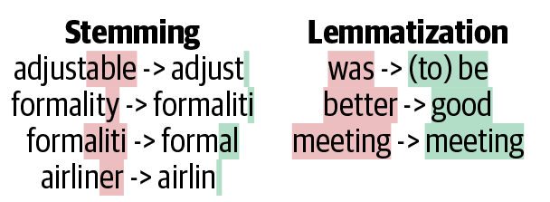
Examples of stemming and lemmatization
Original: “The striped bats are hanging on their feet for best”
Stemmed: “the stripe bat are hang on their feet for best”
Lemmatized: “the stripe bat be hang on their foot for good”
Source: Kushwah (2019) What is difference between stemming and lemmatization?, Quora.
Examples
Stemmed
organization -> organ
civilization -> civil
information -> inform
consultant -> consult
Lemmatized
Here’s looking at you, kid. -> here be look at you , kid .
Lemmatize the text
'incident 100kph incident incidental'Apply to the whole dataset
# The lemma column was computed after the train/val/test split, so attach it to
# the existing sets (same rows, so y_train/y_val/y_test still apply).
X_train["SUMMARY_EN_LEMMA"] = df.loc[X_train.index, "SUMMARY_EN_LEMMA"]
X_val["SUMMARY_EN_LEMMA"] = df.loc[X_val.index, "SUMMARY_EN_LEMMA"]
X_test["SUMMARY_EN_LEMMA"] = df.loc[X_test.index, "SUMMARY_EN_LEMMA"]
X_train.shape, X_val.shape, X_test.shape((4169, 10), (1390, 10), (1390, 10))What is left?
Original: V6357885318682, a 2000 Pontiac Montana minivan, made a left turn from a private driveway onto a northbound 5-lane two-way, dry asphalt roadway on a downhill grade. The posted speed limit on this roadway was 80 kmph (50 MPH). V6357885318682 entered tLemmatized: v6357885318682 pontiac montana minivan left turn private driveway northbound lane way dry asphalt roadway downhill grade post speed limit roadway kmph mph v6357885318682 enter roadway cross southbound lane enter northbound lane left turn lane way intOriginal: The crash occurred in the eastbound lane of a two-lane, two-way asphalt roadway on level grade. The conditions were daylight and wet with cloudy skies in the early afternoon on a weekday.
V342542243, a 1995 Chevrolet Lumina was traveling eastbouLemmatized: crash occur eastbound lane lane way asphalt roadway level grade condition daylight wet cloudy sky early afternoon weekday v342542243 chevrolet lumina travel eastbound v342542269 chevrolet trailblazer travel eastbound roadway v342542269 attempt left hKeep 1,000 most frequent lemmas
1000['10' '150' '48kmph' '4x4' '56kmph'] ['lens' 'lesabre' 'let' 'level' 'lexus'] ['yaw' 'year' 'yellow' 'yield' 'zone']Create the X matrices:
Check the input matrix
| 10 | 150 | 48kmph | 4x4 | 56kmph | 64kmph | 72kmph | ability | able | accelerate | ... | yield | zone | WEATHER1 | WEATHER2 | WEATHER3 | WEATHER4 | WEATHER5 | WEATHER6 | WEATHER7 | WEATHER8 | |
|---|---|---|---|---|---|---|---|---|---|---|---|---|---|---|---|---|---|---|---|---|---|
| 2532 | 0 | 0 | 0 | 0 | 0 | 0 | 0 | 0 | 0 | 0 | ... | 0 | 0 | 0 | 0 | 0 | 0 | 0 | 0 | 0 | 0 |
| 6209 | 0 | 0 | 0 | 0 | 0 | 0 | 0 | 0 | 0 | 0 | ... | 0 | 0 | 0 | 0 | 0 | 0 | 0 | 0 | 0 | 0 |
| 2561 | 0 | 0 | 0 | 0 | 1 | 1 | 0 | 0 | 0 | 0 | ... | 0 | 0 | 0 | 0 | 0 | 0 | 0 | 0 | 0 | 0 |
| ... | ... | ... | ... | ... | ... | ... | ... | ... | ... | ... | ... | ... | ... | ... | ... | ... | ... | ... | ... | ... | ... |
| 6882 | 0 | 0 | 0 | 0 | 0 | 0 | 0 | 0 | 0 | 0 | ... | 0 | 0 | 0 | 0 | 0 | 0 | 0 | 0 | 0 | 0 |
| 206 | 0 | 0 | 0 | 0 | 0 | 0 | 0 | 0 | 0 | 0 | ... | 0 | 0 | 0 | 0 | 0 | 0 | 0 | 0 | 0 | 0 |
| 6356 | 0 | 0 | 0 | 0 | 0 | 0 | 0 | 0 | 0 | 0 | ... | 0 | 0 | 0 | 0 | 0 | 0 | 0 | 0 | 0 | 0 |
4169 rows × 1008 columns
Make & inspect the model
Model: "sequential_2"
┏━━━━━━━━━━━━━━━━━━━━━━━━━━━━━━━━━┳━━━━━━━━━━━━━━━━━━━━━━━━┳━━━━━━━━━━━━━━━┓ ┃ Layer (type) ┃ Output Shape ┃ Param # ┃ ┡━━━━━━━━━━━━━━━━━━━━━━━━━━━━━━━━━╇━━━━━━━━━━━━━━━━━━━━━━━━╇━━━━━━━━━━━━━━━┩ │ dense_4 (Dense) │ (None, 100) │ 100,900 │ ├─────────────────────────────────┼────────────────────────┼───────────────┤ │ dense_5 (Dense) │ (None, 3) │ 303 │ └─────────────────────────────────┴────────────────────────┴───────────────┘
Total params: 101,203 (395.32 KB)
Trainable params: 101,203 (395.32 KB)
Non-trainable params: 0 (0.00 B)
Fit & evaluate the model
Epoch 4: early stopping
Restoring model weights from the end of the best epoch: 3.
CPU times: user 531 ms, sys: 236 ms, total: 767 ms
Wall time: 573 ms[0.06072762981057167, 0.9920844435691833, 0.9997601509094238]Use a Continuous Representation
Lecture Outline
Natural Language Processing
How Computers View Text
Car Crash Police Reports
Text Vectorisation with Bag of Words
Discard Infrequent Words and Stop Words
Merge Together Similar Words
Use a Continuous Representation
Word Embeddings
Demo of Word Embeddings
Recap
Term Frequency-Inverse Document Frequency
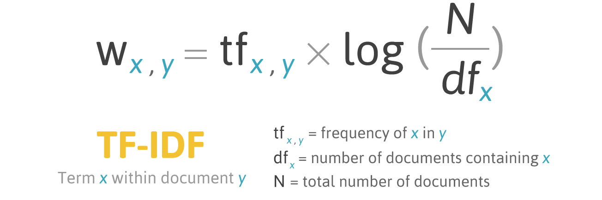
Infographic explaining TF-IDF
Source: FiloTechnologia (2014), A simple Java class for TF-IDF scoring, Blog post.
Using TF-IDF vectorisation
['10', '105', '113', '12', '15', '150', '16', '17', '18', '180', '19', '1988', '1989', '1990', '1991', '1992', '1993', '1994', '1995', '1996', '1997', '1998', '1999', '20', '2000', '2001', '2002', '2003', '2004', '2005', '2006', '2007', '21', '22', '23', '24', '25', '26', '27', '28', '29', '30', '30mph', '31', '32', '33', '34', '35', '35mph', '36']The TF-IDF vectors
| 10 | 105 | 113 | 12 | 15 | 150 | 16 | 17 | 18 | 180 | ... | yield | zone | WEATHER1 | WEATHER2 | WEATHER3 | WEATHER4 | WEATHER5 | WEATHER6 | WEATHER7 | WEATHER8 | |
|---|---|---|---|---|---|---|---|---|---|---|---|---|---|---|---|---|---|---|---|---|---|
| 2532 | 0.000000 | 0.0 | 0.00000 | 0.0 | 0.0 | 0.0 | 0.0 | 0.0 | 0.0 | 0.0 | ... | 0.0 | 0.0 | 0 | 0 | 0 | 0 | 0 | 0 | 0 | 0 |
| 6209 | 0.000000 | 0.0 | 0.00000 | 0.0 | 0.0 | 0.0 | 0.0 | 0.0 | 0.0 | 0.0 | ... | 0.0 | 0.0 | 0 | 0 | 0 | 0 | 0 | 0 | 0 | 0 |
| 2561 | 0.058082 | 0.0 | 0.08834 | 0.0 | 0.0 | 0.0 | 0.0 | 0.0 | 0.0 | 0.0 | ... | 0.0 | 0.0 | 0 | 0 | 0 | 0 | 0 | 0 | 0 | 0 |
| ... | ... | ... | ... | ... | ... | ... | ... | ... | ... | ... | ... | ... | ... | ... | ... | ... | ... | ... | ... | ... | ... |
| 6882 | 0.000000 | 0.0 | 0.00000 | 0.0 | 0.0 | 0.0 | 0.0 | 0.0 | 0.0 | 0.0 | ... | 0.0 | 0.0 | 0 | 0 | 0 | 0 | 0 | 0 | 0 | 0 |
| 206 | 0.000000 | 0.0 | 0.00000 | 0.0 | 0.0 | 0.0 | 0.0 | 0.0 | 0.0 | 0.0 | ... | 0.0 | 0.0 | 0 | 0 | 0 | 0 | 0 | 0 | 0 | 0 |
| 6356 | 0.000000 | 0.0 | 0.00000 | 0.0 | 0.0 | 0.0 | 0.0 | 0.0 | 0.0 | 0.0 | ... | 0.0 | 0.0 | 0 | 0 | 0 | 0 | 0 | 0 | 0 | 0 |
4169 rows × 1008 columns
Feed TF-IDF into an ANN
Model: "sequential_3"
┏━━━━━━━━━━━━━━━━━━━━━━━━━━━━━━━━━┳━━━━━━━━━━━━━━━━━━━━━━━━┳━━━━━━━━━━━━━━━┓ ┃ Layer (type) ┃ Output Shape ┃ Param # ┃ ┡━━━━━━━━━━━━━━━━━━━━━━━━━━━━━━━━━╇━━━━━━━━━━━━━━━━━━━━━━━━╇━━━━━━━━━━━━━━━┩ │ dense_6 (Dense) │ (None, 100) │ 100,900 │ ├─────────────────────────────────┼────────────────────────┼───────────────┤ │ dense_7 (Dense) │ (None, 3) │ 303 │ └─────────────────────────────────┴────────────────────────┴───────────────┘
Total params: 101,203 (395.32 KB)
Trainable params: 101,203 (395.32 KB)
Non-trainable params: 0 (0.00 B)
Fit & evaluate
[0.04896169528365135, 0.9966418743133545, 1.0]Comparing the models
Same dense network throughout — only the text representation changes.
| Model | Features | Parameters | Train accuracy | Val. accuracy | Val. loss | Val. top-2 |
|---|---|---|---|---|---|---|
| Bag of words (full vocab) | 18,874 | 1,887,803 | 99.0% | 95.0% | 0.190 | 99.4% |
| Lemmatized BoW (top 1,000) | 1,008 | 101,203 | 99.2% | 94.7% | 0.182 | 99.4% |
| TF-IDF (top 1,000) | 1,008 | 101,203 | 99.7% | 93.7% | 0.183 | 99.4% |
| Bag of words (top 1,000) | 1,008 | 101,203 | 95.5% | 92.6% | 0.266 | 99.4% |
Word Embeddings
Lecture Outline
Natural Language Processing
How Computers View Text
Car Crash Police Reports
Text Vectorisation with Bag of Words
Discard Infrequent Words and Stop Words
Merge Together Similar Words
Use a Continuous Representation
Word Embeddings
Demo of Word Embeddings
Recap
Each column used to be a word
Both bag-of-words and TF-IDF give a column for every word in the vocabulary, so you can always read off what a number refers to:
| Representation | Values | What the “crash” column holds |
|---|---|---|
| Bag of words | integers 0, 1, 2, \dots | number of times “crash” appears |
| TF-IDF | continuous, \ge 0 | down-weighted count of “crash” |
TF-IDF made the numbers continuous, but each column still means one specific word.
Word embeddings: continuous but unlabelled
Word embeddings (Word2Vec, GloVe) are continuous too, but the resemblance stops there:
- the vector is short & dense — e.g. 300 numbers, almost all non-zero;
- the columns are learned dimensions, not words.
So a word becomes something like
\text{crash} \;\longrightarrow\; [\,0.07,\; -0.42,\; 0.31,\; \ldots,\; -0.05\,]
and there is no way to say what dimension 137 means. The meaning is spread across the whole vector — it lives in the directions and distances between words, not in any single column.
Word Vectors
- One-hot representations capture word ‘existence’ only, whereas word vectors capture information about word meaning as well as location.
- This enables deep learning NLP models to automatically learn linguistic features.
- Word2Vec & GloVe are popular algorithms for generating word embeddings (i.e. word vectors).
Word Vectors II
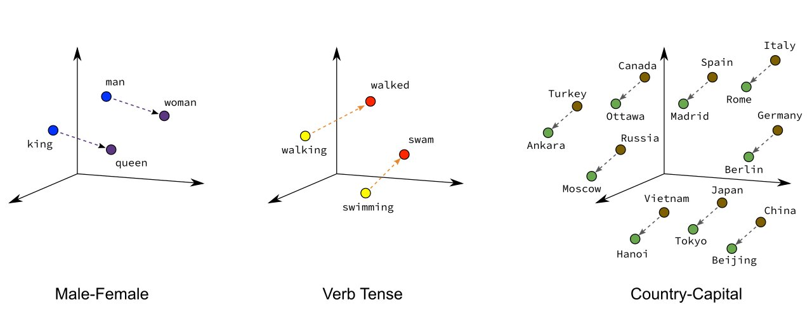
Illustrative word vectors.
Bogacz (2023), Text Vectorization, an Introduction, The Information Lab.
Illustration of the embeddings being learned
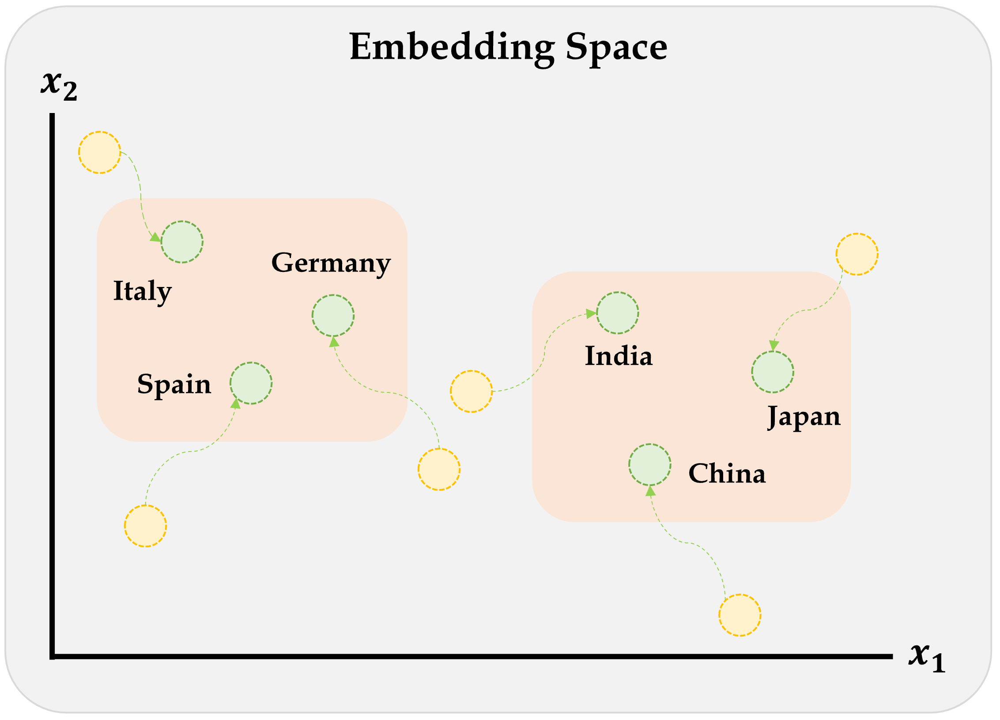
Embeddings will gradually improve during training.
Source: Marcus Lautier (2022).
Word2Vec
Key idea: You’re known by the company you keep.
Two algorithms are used to calculate embeddings:
- Continuous bag of words: uses the context words to predict the target word
- Skip-gram: uses the target word to predict the context words
Predictions are made using a neural network with one hidden layer. Through backpropagation, we update a set of “weights” which become the word vectors.
Paper: Mikolov et al. (2013).
Word2Vec training methods
Suggested viewing
Computerphile (2019), Vectoring Words (Word Embeddings), YouTube (16 mins).
Source: Amit Chaudhary (2020), Self Supervised Representation Learning in NLP.
Word Vector Arithmetic
Relationships between words becomes vector math.

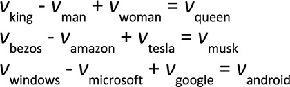
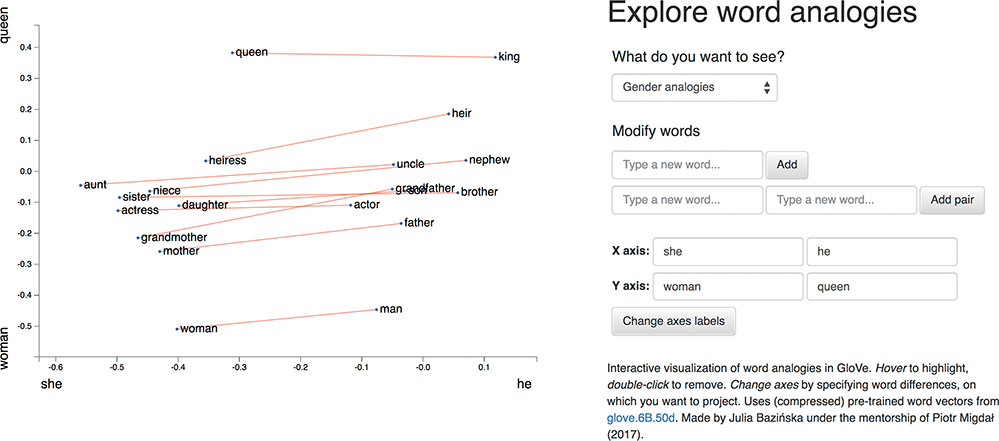
Sources: PressBooks, College Physics: OpenStax, Chapter 17 Figure 9, and Krohn (2019), Deep Learning Illustrated, Figures 2-7 & 2-8.
Demo of Word Embeddings
Lecture Outline
Natural Language Processing
How Computers View Text
Car Crash Police Reports
Text Vectorisation with Bag of Words
Discard Infrequent Words and Stop Words
Merge Together Similar Words
Use a Continuous Representation
Word Embeddings
Demo of Word Embeddings
Recap
Pretrained word embeddings
GloVe (_Gl_obal _Ve_ctors) are pre-trained word embeddings from Stanford, trained on Wikipedia + Gigaword (6 billion tokens, ~400,000 word vocabulary).
GloVe loading code
_zip = Path("data/glove.6B.zip")
if not _zip.exists():
urlretrieve("https://downloads.cs.stanford.edu/nlp/data/glove.6B.zip", _zip)
words, _rows = [], []
with zipfile.ZipFile(_zip) as _zf:
with _zf.open("glove.6B.300d.txt") as _f:
for _line in _f:
_parts = _line.split()
words.append(_parts[0].decode("utf-8"))
_rows.append(_parts[1:])
vectors = np.array(_rows, dtype=np.float32)
vectors /= np.linalg.norm(vectors, axis=1, keepdims=True)
word_to_index = {w: i for i, w in enumerate(words)}
def vec(word):
return vectors[word_to_index[word]]
def similarity(a, b):
return float(vec(a) @ vec(b))
def nearest(vector, n=10, exclude=()):
v = vector / np.linalg.norm(vector)
sims = vectors @ v
results = []
for i in np.argsort(-sims):
w = words[i]
if w not in exclude:
results.append((w, float(sims[i])))
if len(results) == n:
break
return results
def analogy(a, b, c, n=10):
"""a is to b as c is to ? e.g. analogy("man", "king", "woman") → queen"""
query = vec(b) - vec(a) + vec(c)
return nearest(query, n=n, exclude={a, b, c})Look up a word vector
array([ 0.04, 0.07, 0.06, -0. , -0.03, 0.03, -0.01, -0.04, -0.07,
0.01, -0.04, -0.1 , -0.03, 0.09, -0.05, 0. , -0.02, -0.02,
-0.05, 0.06, 0.05, 0.11, -0.01, -0.02, 0.06, -0.01, 0.04,
0. , 0.06, -0.18, -0.08, 0.07, 0.05, -0.04, -0.08, 0.05,
-0.06, -0.05, -0.07, 0.04, 0.02, 0.01, 0. , 0.08, -0.02,
0.05, 0.15, 0.02, 0.01, -0.03, -0.01, -0.1 , 0.05, 0.08,
-0.03, -0.04, -0.01, 0.05, 0.02, -0.04, 0.12, -0.04, -0. ,
-0.07, -0.02, -0.05, -0.03, 0.07, -0.04, 0.04, 0.08, 0.02,
-0.01, -0.06, 0.02, -0.03, -0.02, -0.01, -0.01, -0.05, -0.02,
0.06, 0.01, -0.06, -0.02, -0.07, 0.04, 0.04, -0.05, 0.01,
0.04, 0.02, -0.02, -0.02, -0. , 0.01, -0.04, 0.03, -0.06,
0.01, 0.05, -0.01, 0. , -0.07, -0.01, -0.06, 0.02, 0.11,
-0.03, 0.02, 0.05, 0. , 0.04, -0.09, 0.06, -0.09, -0.09,
0.04, -0.05, -0.01, -0.03, 0.02, 0.12, -0.02, -0.04, 0.03,
0.01, 0.02, -0.05, -0.02, 0.01, 0.06, -0.03, -0. , 0.03,
-0.03, 0. , 0.03, -0.02, 0.06, 0.02, 0.01, -0.04, -0.06,
-0.04, 0.02, -0.01, 0.06, -0.01, -0.07, -0.07, 0.15, 0.05,
-0.01, -0.07, -0.04, -0.02, 0.04, -0.05, -0.07, 0.07, 0.06,
-0.06, 0.05, -0. , 0.03, 0.01, -0.01, 0.07, -0.03, 0.01,
0.03, -0.07, 0.05, -0.08, 0.09, 0.01, 0.03, 0.08, -0.11,
-0. , 0.03, 0.05, -0.01, 0.02, -0.02, 0.04, 0.06, 0.05,
-0.04, 0.09, 0.11, -0.03, -0.02, -0.03, 0.02, -0.12, -0.03,
-0.06, 0.03, 0.06, -0.1 , 0.17, 0.04, -0.12, -0.03, 0.11,
-0. , 0.03, -0. , -0.06, 0.03, 0.06, -0.08, -0.1 , 0.02,
0.03, -0.03, -0.03, 0.11, 0.08, 0.06, 0.01, -0. , -0.11,
-0.09, -0.01, -0.09, -0.04, -0.04, 0.04, 0.07, -0.02, -0.01,
0.05, -0.01, 0.17, 0.01, -0.13, 0.03, -0.05, -0.02, -0.01,
-0.12, -0.07, -0.03, -0.01, 0.06, -0.03, -0.06, 0.17, 0.08,
-0.01, 0.1 , 0.02, 0.05, -0.02, 0.04, -0.04, 0.03, 0.05,
-0.06, -0.02, 0.02, 0.01, -0.06, 0.04, 0.06, 0.07, -0.02,
-0.09, -0.07, 0.01, 0.06, 0.13, -0.01, -0.17, 0.01, -0.18,
-0.02, -0.02, 0.05, -0.04, 0.03, -0.01, 0.02, 0.08, -0.04,
0.05, 0.01, 0.03, -0. , -0.03, 0.04, -0.07, -0.05, 0.05,
0. , -0.06, 0.01], dtype=float32)Find nearby word vectors
[('python', 1.0),
('monty', 0.683738112449646),
('perl', 0.519283652305603),
('cleese', 0.5092198848724365),
('pythons', 0.5007114410400391),
('php', 0.4942314028739929),
('grail', 0.4683017134666443),
('scripting', 0.467612624168396),
('skit', 0.4474538564682007),
('javascript', 0.4312553405761719)]What does ‘similarity’ mean?
The ‘similarity’ scores
are normally based on cosine distance.
np.float32(0.795162)Weng’s GoT Word2Vec
In the Game of Thrones (GoT) word embedding space, the top similar words to “king” and “queen” are:
('kings', 0.897245)
('baratheon', 0.809675)
('son', 0.763614)
('robert', 0.708522)
('lords', 0.698684)
('joffrey', 0.696455)
('prince', 0.695699)
('brother', 0.685239)
('aerys', 0.684527)
('stannis', 0.682932)Source: Lilian Weng (2017), Learning Word Embedding, Blog post.
Combining word vectors
You can summarise a sentence by averaging the individual word vectors.
(300, array([-0.03, 0.03, 0.01, 0.01, -0.01], dtype=float32))“As it turns out, averaging word embeddings is a surprisingly effective way to create word embeddings. It’s not perfect (as you’ll see), but it does a strong job of capturing what you might perceive to be complex relationships between words.”
— Trask (2019, ch. 12)
Analogies with word vectors
[('britain', 0.7673852443695068),
('england', 0.6279442310333252),
('uk', 0.6197735667228699),
('british', 0.6013829708099365),
('ireland', 0.5365166664123535),
('u.k.', 0.5294836759567261),
('scotland', 0.5195812582969666),
('australia', 0.5150107145309448),
('wales', 0.5144591927528381),
('europe', 0.5047693848609924)][('queen', 0.6713277101516724),
('princess', 0.5432624816894531),
('throne', 0.538610577583313),
('monarch', 0.5347575545310974),
('daughter', 0.49802514910697937),
('mother', 0.49564436078071594),
('elizabeth', 0.4832652807235718),
('kingdom', 0.47747093439102173),
('prince', 0.4668240249156952),
('wife', 0.4647327661514282)]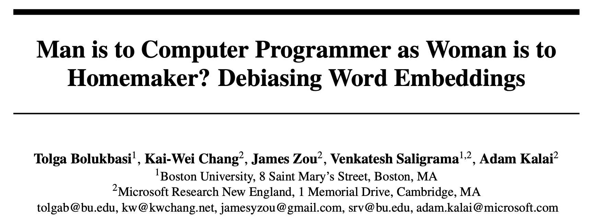
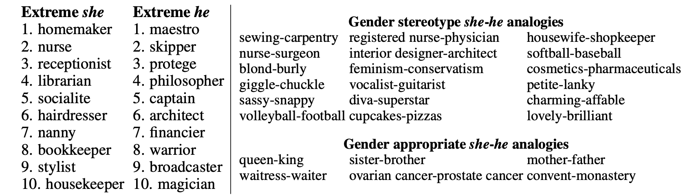
Source: The title block and Figure 1 directly from Bolukbasi et al. (2016).
Recap
Lecture Outline
Natural Language Processing
How Computers View Text
Car Crash Police Reports
Text Vectorisation with Bag of Words
Discard Infrequent Words and Stop Words
Merge Together Similar Words
Use a Continuous Representation
Word Embeddings
Demo of Word Embeddings
Recap
The vectorisation toolkit
Every method turns text into numbers; they differ on what becomes a vector — a single word or a whole document — and how that vector looks (sparse vs dense):
| One word \to vector | One document \to vector | |
|---|---|---|
| Sparse length |V|, one column per word |
one-hot encoding | bag of words, TF-IDF |
| Dense short, learned dimensions |
word embeddings | averaged word embeddings |
- Sparse vectors have one interpretable column per vocabulary word; dense embeddings are short and their columns are uninterpretable learned dimensions.
- A document vector is just its word vectors pooled: sum the one-hots for bag of words; average the embeddings for a sentence vector.
- Because embeddings are word-level, representing a whole document needs an extra step — averaging them, or feeding the sequence into an RNN.
Package Versions
Python implementation: CPython
Python version : 3.14.5
IPython version : 9.15.0
keras : 3.15.0
matplotlib: 3.11.0
numpy : 2.5.0
pandas : 3.0.3
seaborn : 0.13.2
scipy : 1.18.0
torch : 2.12.1
Glossary
- bag of words
- lemmatization
- n-grams
- one-hot embedding
- TF-IDF
- vocabulary
- word embedding
- word2vec
References
Bahdanau, D., Cho, K., & Bengio, Y. (2015). Neural machine translation by jointly learning to align and translate. 3rd International Conference on Learning Representations (ICLR).
Bolukbasi, T., Chang, K.-W., Zou, J. Y., Saligrama, V., & Kalai, A. T. (2016). Man is to computer programmer as woman is to homemaker? Debiasing word embeddings. Advances in Neural Information Processing Systems, 29.
Mikolov, T., Chen, K., Corrado, G., & Dean, J. (2013). Efficient estimation of word representations in vector space. arXiv Preprint arXiv:1301.3781.
Russell, S., & Norvig, P. (2021). Artificial intelligence: A modern approach (4th ed.). Pearson.
Trask, A. W. (2019). Grokking deep learning. Manning Publications.
Vajjala, S., Majumder, B., Gupta, A., & Surana, H. (2020). Practical natural language processing: a comprehensive guide to building real-world NLP systems. O’Reilly Media.
Vaswani, A., Shazeer, N., Parmar, N., Uszkoreit, J., Jones, L., Gomez, A. N., Kaiser, Ł., & Polosukhin, I. (2017). Attention is all you need. Advances in Neural Information Processing Systems, 30.